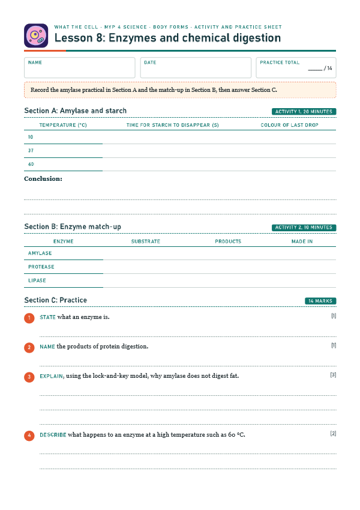

By the end of the lesson you can
- Describe what an enzyme does
- Explain the lock-and-key model
- Name the enzymes that digest starch, protein and fat, and their products
- Investigate how temperature affects amylase
Keys: arrows or a presentation clicker move the slides, F for full screen. Slides with a red dot have a video or simulation.
Videos (all 5 minutes or less)
- 4:18
Digestive enzymes
FuseSchool. While you watch: Which enzyme breaks down protein? Slide 12.
Simulations
- Lab
Print and practise

Activity and practice sheet
Used in the lesson’s activities, with practice questions. Your teacher has the answers.
Download (PDF)Lesson 8 slides
All 18 slides in one file, to read again or print. The video buttons on the slides open YouTube.
Download the slides (PDF)Revising? The Revision tab on the unit page has the unit notes and review.
Class activity pack
Everything to print for the lesson’s activities: picture cards, sorting mats, station cards with their kit lists, and the teacher’s set-up notes. Print it before class.
Download the activity pack (PDF)Notes: Enzymes and chemical digestion
enzyme
A protein that speeds up a reaction without being used up. For example: amylase.
substrate
The molecule an enzyme acts on. For example: starch for amylase.
active site
The part of the enzyme the substrate fits into. For example: like a lock.
product
What the reaction makes. For example: sugar from starch.
denatured
When the active site changes shape and stops working. For example: enzymes at 60 degrees C.
optimum
The best temperature or pH for an enzyme. For example: 37 degrees C in humans.
enzyme
A protein that speeds up a reaction in a living thing. It is not used up, so it can be used again and again.. For example: amylase in saliva.
Key words
| enzyme | a protein that speeds up a reaction |
|---|---|
| substrate | the molecule the enzyme acts on |
| active site | where the substrate fits |
| amylase | digests starch into sugars |
| protease | digests protein into amino acids |
| lipase | digests fat into fatty acids and glycerol |
| denatured | active site changed shape; enzyme stops working |